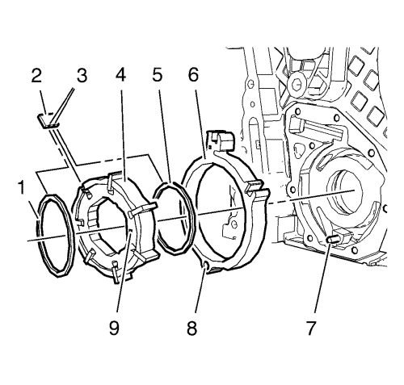
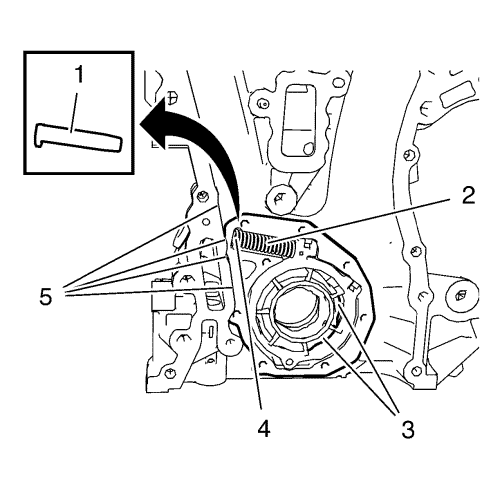
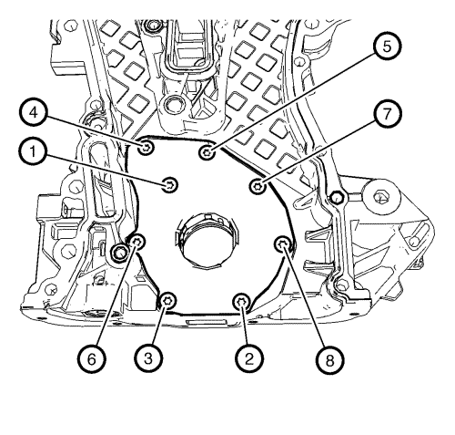

Nota: El pasador y muelle de la corredera de la bomba de aceite, así como la junta de la corredera y el muelle de la junta de la corredera pueden solicitarse como piezas individuales. El resto de componentes de la bomba de aceite sólo se pueden encargar como un conjunto de repuesto.
- Monte los componentes de la bomba de aceite en el siguiente orden:
| | Nota: El calibre (8) de la corredera de la bomba de aceite debe encajar con suavidad y sin que haya holgura respecto al pasador del pivote de la corredera de la bomba de aceite (7). |
| 1.1. | Monte la corredera de la bomba de aceite (6). |
| 1.2. | Monte el aro interior del álabe de la bomba de aceite (5). |
| | Nota: Observe la posición de montaje del rotor de álabes de la bomba de aceite (4). La marca (9) debe señalar hacia la tapa de la bomba de aceite. |
| 1.3. | Monte el rotor de álabes de la bomba de aceite (4). |
| | Nota: preste atención a las partes planas (3) situadas en los álabes de la bomba de aceite (2) provocados por los anillos de los álabes de la bomba de aceite. Las partes planas localizadas deben quedar orientadas hacia el rotor de álabes de la bomba de aceite. |
| 1.4. | Monte los 6 álabes de la bomba de aceite (2). |
| 1.5. | Monte el aro exterior del álabe de la bomba de aceite (1). |

- Monte las 2 juntas de la corredera de la bomba de aceite y los 2 muelles de junta de la corredera de la bomba de aceite (2), en la posición indicada, en las 2 ranuras (1) de la corredera de la bomba de aceite.

- Proteja el borde de la cubierta delantera del motor (5) con piezas de plástico adecuadas.
Nota: El muelle de la corredera de la bomba de aceite (2) retirado debe tener una longitud de 76,5 mm (3,0118 pulg.) en el caso de los motores de absorción y de 61 mm (2,4016 pulg.) en el de los motores turbo.
- Monte el pasador del muelle de la corredera de la bomba de aceite junto con el muelle de la corredera de la bomba de aceite (4). Utilice un destornillador para comprimir el muelle de la corredera de la bomba de aceite. El lado plano del pasador del muelle de la corredera de la bomba de aceite debe quedar hacia arriba.
- Mida las holguras de la bomba de aceite para asegurar que el montaje de los componentes de la bomba de aceite sea correcto. Consultar Limpieza y revisión de la cubierta delantera del motor y de la bomba de aceite .
- Lubrique con aceite de motor los álabes de la bomba de aceite, el rotor de los álabes de la bomba de aceite, el muelle de la corredera de la bomba de aceite y la zona (3).
- Compruebe la funcionalidad del mecanismo del muelle de la corredera de la bomba de aceite.

- Monte la cubierta de la bomba de aceite (2) y los 8 tornillos de la cubierta de la bomba de aceite (1).
Precaución:Consulte Precaución con las fijaciones en la sección Prólogo.

- Apriete los tornillos de la bomba de aceite en el orden indicado a 8 N·m (71 lib. pulg.).

- Monte el equilibrador del cigüeñal (1) y gírelo en la dirección indicada (2) para comprobar el funcionamiento del mecanismo de la bomba de aceite. El equilibrador del cigüeñal debe girar con facilidad.